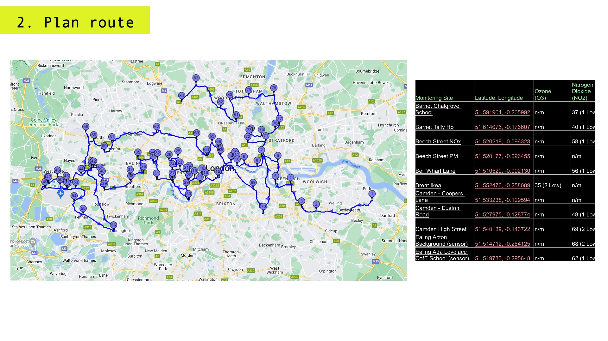
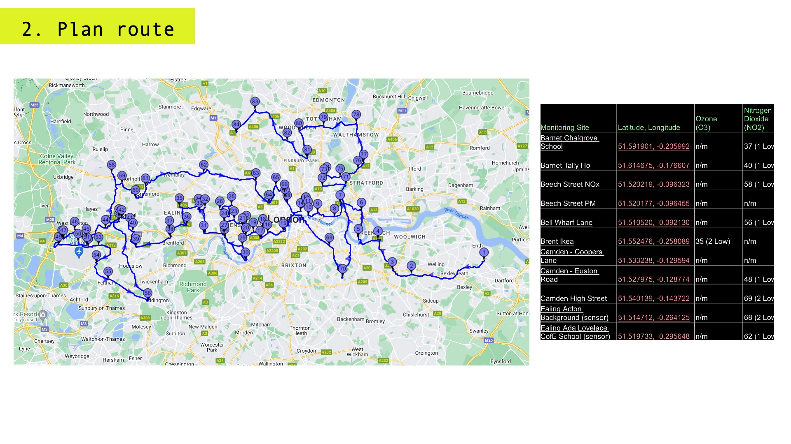

Airways
Film treatment for speculative production

In London and elsewhere air pollution is seriously damaging people’s health in myriad ways. Air pollution can cause and worsen health effects in all individuals, particularly vulnerable populations including children. A new Clean Air (Human Rights) Bill that would make clean air a human right gained cross-party support in the House of Lords before moving on to the Commons in December 2022. Now is the time to raise awareness and support better environmental and public health policies.
Airways is currently in the planning stages. I am seeking project partners and funding to bring the concept to life. The mission? (1) To complete a journey on foot that joins up 86 air pollution monitoring sites, totalling over 150 miles. (2) To fundraise for the Ella Roberta Foundation and support their campaigns for healthier airways. (3) to make a film about our journey and raise awareness about personal exposure to air pollution. Airways seeks to engage and expand audiences with original and informative creative content. The full pitch deck is available on request. Contact Lucy here


 
